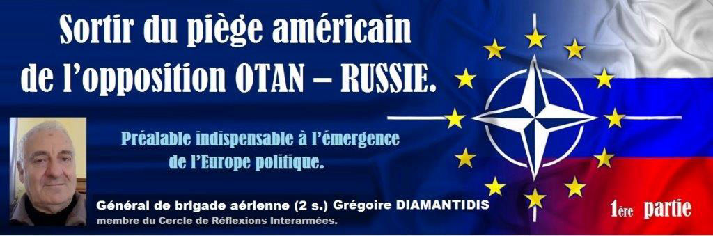

Sortir du piège américain de l’opposition OTAN – Russie. Préalable indispensable à l’émergence de l’Europe politique
par Grégoire DIAMANTIDIS

Introduction
À l’heure où le monde en crise économique profonde est le théâtre d’importantes évolutions politiques, climatiques, démographiques et migratoires, et où pointent de nouvelles confrontations entre les deux grandes puissances mondiales, Chine et États-Unis, ainsi qu’entre puissances régionales émergentes, l’Europe peine pour faire entendre sa voix.
Forte économiquement mais beaucoup plus faible politiquement elle est quasiment inexistante en tant que puissance militaire, en particulier face à la confrontation qui s’annonce entre les États-Unis et la Chine.
Conscients de ces faiblesses et voulant accéder à ce statut, certains pays européens essaient depuis quelques années de se doter des moyens et structures, militaires et politiques, propres à lui assurer non seulement son autonomie de décision, mais aussi un poids politique en rapport avec son poids économique et démographique.
Ainsi, plusieurs initiatives ont vu le jour au sein de l’Union européenne depuis le milieu des années 90, au nom de la Politique Européenne de Sécurité et de défense Commune (PESC) avec notamment :
La mise sur pied d’un état-major de gestion de crise,
La création de l’Agence Européenne de Défense pour l’Armement (AED),
Le fond européen de défense (FED).
Par ailleurs, depuis l’élaboration du document initial de la Stratégie Européenne de Sécurité et de Défense (SESD) , beaucoup d’eau a coulé sous les ponts, et de nombreuses idées et études ont circulé pour essayer d’élargir au-delà des seules missions dites « de Petersberg », le champ des compétences de défense de l’Union Européenne, débouchant en particulier sur :
La décision de créer une Coopération Structurée permanente (CSP), ou encore
L’Initiative Européenne d’Intervention (IEI),
dans le but de lui donner une plus grande autonomie de décision et de conduite d’opérations extérieures.
De même le traité d’Aix-la-Chapelle signé récemment entre la France et l’Allemagne et les déclarations communes de nos deux dirigeants en vue d’une armée européenne sont autant d’efforts allant dans le même sens, celui d’une prise en mains par l’Europe de sa propre défense, en la dotant des moyens militaires et des structures nécessaires à cette mission.
Toutefois, même si ces initiatives vont dans le bon sens, il est clair qu’après après s’être reposée pendant plus de 70 ans sur les États-Unis pour assurer sa sécurité, l’Europe a encore devant elle un chemin assez long et pavé d’embûches pour se libérer de la sujétion, voire de la soumission dans laquelle elle s’est volontairement placée vis à vis de son grand allié américain.
Si cette soumission pouvait se justifier face à la menace du Pacte de Varsovie, la disparition de ce dernier et la dissolution de l’Union soviétique au début des années 90 changèrent complètement la donne, puisque l’OTAN perdant alors sa mission essentielle de défense de l’Europe, perdait du même coup sa raison d’être, ce qui aurait dû conduire ipso-facto à sa dissolution.
Mais c’était sans compter avec les habitudes confortables acquises des deux côtés de l’Atlantique, car, au contraire, l’OTAN sous l’impulsion des États-Unis et avec l’accord des européens enthousiastes se lança dans une politique d’autojustification tous azimuts, aux conséquences potentiellement dangereuses pour l’Europe comme nous le verrons ci-après.
En effet, pour les pays membres européens de l’alliance , (à l’exception notable de la France qui s’efforça dès 1991 de redonner vie à l’UEO), une telle dissolution aurait signifié de prendre véritablement en mains leur propre défense, avec le courage politique et financier que cela impliquait, et surtout pour les États-Unis elle aurait entraîné une sérieuse perte d’influence politique, sur le continent ouest-européen, avec de non négligeables retombées économiques notamment en matière de vente d’armements .
C’est bien pourquoi aujourd’hui tout reste à faire, si l’Europe veut atteindre le statut véritable de puissance militaire et politique indépendante des États-Unis, alliée mais non soumise.
La présente analyse n’a pas pour ambition à ce stade de proposer telle ou telle solution pour donner à l’Europe ce statut de puissance autonome, tant le problème est complexe (tant politiquement que militairement) et les options possibles multiples : profonde refonte (voire dissolution ?) de l’Alliance atlantique, élaboration d’une Alliance européenne, Confédération européenne, création d’un noyau permanent européen, structure permettant des coalitions ad ’hoc, etc.
Elle se propose en revanche, de mettre en lumière l’urgence qu’il y a pour l’Union Européenne à sortir du double piège dans lequel elle s’est laissée enfermer à la fois par la géopolitique de l’OTAN et celle des États-Unis, si elle veut acquérir un véritable poids politique et militaire, et ceci quels que puissent être la forme et le modèle futurs d’une possible Europe véritable puissance politique.
Le mécanisme américano-otanien de création artificielle de « l’ennemi russe » par provocation-réaction qui depuis 20 ans a déjà dangereusement fait rebasculer le continent européen vers une « paix froide », en attendant une nouvelle guerre froide, doit être stoppé d’urgence.
Au sein de l’Union Européenne, seule la France, aidée de l’Allemagne, peut et doit prendre des initiatives fortes, voire disruptives, pour tendre la main à la Russie afin de convaincre nos partenaires « soumis à l’OTAN », de la ramener à un véritable partenariat avec l’Europe.
Face aux menaces grandissantes dans ses approches sud, l’Europe, n’a pas besoin de se créer une nouvelle menace à l’est. La véritable sécurité de l’Europe ne se fera qu’avec la Russie et non pas contre elle.
Le piège de l’OTAN
La réunification allemande fut scellée le 12 septembre 1990 par le Traité de Moscou, appelé «2 + 4» (RFA, RDA + France, Royaume Uni, USA, URSS). Pour permettre à l’Allemagne de retrouver sa souveraineté pleine et entière, il prévoyait le retrait de toutes les forces soviétiques, en échange entre autres, du renoncement par l’Allemagne à la possession de toute arme de destruction massive par les deux clauses suivantes :
Art 3 « ... [l’Allemagne s’engage à] ... la renonciation à la fabrication, à la possession et au contrôle d’armes nucléaires, biologiques et chimiques .. »
L’Art 5 quant à lui stipule que les forces de l’OTAN pourront ensuite stationner dans la partie-est de l'Allemagne mais s'engagent à ne pas faire stationner d'armes nucléaires après l'évacuation de l'ex RDA par les troupes soviétiques.
De plus, l’Allemagne (Helmut Kohl) et les États-Unis (George H W Bush), pour obtenir l’accord de Mikhaïl Gorbatchev de l’entrée de l’Allemagne de l’est dans l’OTAN, s’engagèrent (oralement) vis-à-vis de la Russie à ne pas étendre l’OTAN plus à l’est, au-delà des frontières de l’Allemagne réunifiée.
Or, tout au contraire, sous l’impulsion des États-Unis, l’OTAN s’empressa d’oublier les assurances données à la Russie, et adopta dans la foulée une stratégie beaucoup plus offensive évidemment ressentie comme agressive par la Russie, selon deux axes principaux :
Lancement de son processus d’élargissement (Conseil de Coopération de l’Atlantique Nord, Partenariat pour la paix, etc.)
Redéfinition et renforcement de son rôle et élargissement de ses missions hors de ses frontières (maintien de la paix, etc.)
L’élargissement de l’OTAN :
« À la conquête de l’Est » …
…ou comment repousser et isoler la Russie en entraînant l’Europe dans la manœuvre
1991 : L’encre du traité de Moscou à peine sèche, et avant même l’institution de l’UE (ce point est à noter), c’est l’OTAN qui est à la manœuvre pour fixer lors du sommet de Rome un certain nombre de critères auxquels devront se conformer les premiers candidats à l’adhésion (Pologne, Hongrie, République Tchèque et Slovaquie).
Il est particulièrement intéressant de noter que certains critères vont très souvent « préempter » ceux, très similaires que l’UE imposera aussi à ses futurs candidats.
En effet, sortant de son rôle essentiellement militaire et de défense, l’OTAN va désormais se comporter en référence morale et fixer ce qu’elle entend par « bonne conduite » en matière d’économie (libéralisation des marchés), de régimes politiques (formes de démocratie, multipartisme, minorités…), de droits de l'homme, de contrôle démocratique des forces armées, etc...
Autant de critères qui seront évidemment repris par l’UE au cœur même de sa construction mais pour lesquels l’OTAN aura souvent joué le rôle de filtre préalable, voire de matrice.
Il est en effet remarquable de noter que dans la très grande majorité des adhésions, la chronologie montre bien que soit l’OTAN précède l’UE, soit il y a quasi-synchronisation, faisant de l’UE, nolens volens et en caricaturant à peine, « l’annexe économique » de l’OTAN. De facto, pour les pays candidats, leur acceptation par l’OTAN prépare leur ticket d’entrée dans l’UE comme le montrent les calendriers respectifs d’adhésion :
Hongrie, Pologne, République Tchèque : OTAN en 1999 suivi de l’UE en 2004, Estonie, Lettonie, Lituanie, Slovaquie, Slovénie : OTAN et UE synchronisés en 2004, Bulgarie, Roumanie : OTAN en 2004 puis UE en 2007, ou encore Croatie : OTAN en 2009 puis UE en 2013.
Certes « comparaison n’est pas raison », mais ce parallélisme, tant du calendrier que des conditions d’admission n’a fait que renforcer une certaine osmose UE/OTAN déjà préexistante : était-ce l’OTAN qui entrait dans l’UE ou l’UE dans l’OTAN ?
Et de fait, il apparaît qu’à partir des années 2000, malgré une tentative de rapprochement de la Russie, l’OTAN en repoussant la main tendue par Medvedev, fut suivie par l’UE qui lui emboîta le pas, de sorte que ces deux organisations apparurent de facto complémentaires dans leurs politiques de pressions, interventions, sanctions et de marginalisation de la Russie.
C’est ainsi, comme nous le verrons, que depuis le début de ce siècle l’UE - soit en tant que telle, soit à travers un certain nombre de ses pays membres – va se trouver associée, qu’elle le veuille ou non, aux politiques interventionnistes otaniennes et américaines, en Europe comme hors de Europe, aboutissant finalement à la restauration de la « bonne vieille menace russe », indispensable à la survie de l’OTAN et au maintien de l’Europe sous tutelle américaine.
Interventions et maintien de la paix : l’OTAN sort de ses frontières
Kosovo : L’OTAN décide sans mandat de l’ONU, l’Europe suit, la Russie est humiliée
Après avoir permis le démantèlement pacifique de l’URSS, la Russie se trouva très diminuée tant économiquement que militairement, et confrontée à la résolution des énormes problèmes ainsi laissés dans tout l’ex-espace soviétique par la perte soudaine de sa zone tampon à l’ouest et la présence d’importantes minorités russes hors de ses nouvelles frontières.
La Russie considéra que sa « victoire » sur le système soviétique, et la paix qu’elle offrait ainsi au monde, justifiait le prix élevé qu’elle était en train de payer, mais pensa tout naturellement être en droit d’espérer en retour l’aide de l’occident pour son redressement.
Malheureusement les occidentaux sous l’influence des États-Unis fidèles à leur obsession antirusse, en firent une toute autre interprétation, n’y voyant qu’une victoire sur la Russie, qu’il fallait exploiter rapidement et le mieux possible.
S’appuyant sur son nouveau rôle (auto-proclamé) de maintien de la paix, l’OTAN instrumentalisée par le grand frère américain et avec la bénédiction morale de l’Europe au nom des droits de l’homme et de la démocratie, inventa le concept d’ingérence humanitaire, qui va lui permettre diverses interventions de déstabilisation, voire de guerre, qui le plus souvent aboutiront « in fine » à humilier, isoler ou stigmatiser la Russie et si possible la pousser à la faute, que l’on s’empressera alors de dénoncer et de transformer en menace pour la paix, justifiant ainsi le renforcement de l’OTAN .
Le schéma classique pour justifier ces guerres humanitaires sera toujours du type : campagnes médiatiques intenses – le plus souvent mensongères - avec indignation sélective et mobilisation des opinions publiques occidentales permettant de tordre le bras aux gouvernements alliés de l’OTAN, puis participation de ceux-ci à des coalitions à géométries variables.
S’affranchissant si besoin est, de l’accord de l’ONU, leurs résultats pourront être désastreux tant politiquement qu’en termes de pertes humaines, mais l’OTAN visera toujours, au fil de ses interventions à éloigner la Russie de l’Europe par la mise en œuvre de cette spirale d’autojustification. A cet égard, la guerre du Kosovo constitue véritablement un cas d’école.
Guerre du Kosovo : un monument de désinformation, de mensonge et de manipulation
Le 24 mars 1999, treize États membres de l’Organisation du traité de l’Atlantique nord (OTAN), dont les États-Unis, la France et l’Allemagne, bombardaient la République fédérale de Yougoslavie pendant 78 jours.
Cette guerre fut déclenchée sur le fondement d’un vaste mensonge médiatique pour « chauffer » l’opinion des populations occidentales et les amener à adopter la position de l’OTAN.
D’abord la campagne de désinformation
Les journaux les plus sérieux comme certaines chaînes de télévisions, n’hésitèrent pas à accuser les serbes de génocide : ils [les Serbes] commettent un « génocide », « jouent au football avec des têtes coupées, dépècent des cadavres, arrachent les fœtus des femmes enceintes tuées et les font griller », selon le ministre de la défense allemand, dont les propos furent repris par les médias ; ils ont tué « de 100 000 à 500 000 personnes » (TF1, 20 avril 1999), incinéré leurs victimes dans des « fourneaux, du genre de ceux utilisés à Auschwitz » (The Daily Mirror, 7 juillet).
De même fut présenté dans les médias occidentaux (par l’inspecteur général de la Bundeswehr) un prétendu plan serbe « Potkova » (fer à cheval) prévoyant l’épuration ethnique des Kosovars dès 1998, qui influença fortement l’opinion publique, en vue de permettre l’engagement de l’Allemagne. La diffusion de ce document par l’Allemagne, en avril 1999, servit de prétexte à l’intensification des bombardements.
Dans cette affaire, les principaux désinformateurs furent les gouvernements occidentaux, l’OTAN ainsi que les organes de presse les plus respectés en Europe. Or ce plan se révéla après la guerre être un faux fourni à l’OTAN par les services bulgares !
Puis le casus-belli : Racak ou la fabrication du coupable idéal, la Serbie
Dans le village de Racak, au Kosovo, 45 cadavres sont découverts début 1999. Cette découverte immédiatement transformée par les médias occidentaux en un massacre de civils albanais attribué aux forces serbes, suscite l’indignation mondiale, et sert de prétexte pour justifier le bombardement de la Yougoslavie. L’OTAN tenait enfin là son casus-belli.
William Walker les mains dans les poches pour mener une soi-disant «enquête sur le massacreÉtant personnellement à l’époque des faits, responsable des inspections de désarmement des différentes parties belligérantes en ex-Yougoslavie (accords de Dayton-Paris) dont la Serbie, je me souviens des doutes que nous avions eus immédiatement, avec les responsables de nos équipes d’inspecteurs sur le terrain , quant à la responsabilité serbe dans ce massacre dont la mise en scène macabre nous paraissait être une manipulation d’origine douteuse ( d’après certaines mutilations « codées » elle semblaient plutôt être la signature de maffias albanaises) ; mais nous n’avions aucune certitude.
Une enquête fut confiée à une finlandaise de renommée mondiale.
A la tête d’une équipe d’enquêteurs internationaux, la Dr Helena Ranta spécialiste de médecine légale fut rapidement soumise, par le biais de sa hiérarchie, à de fortes pressions américaines pour accréditer la fausse version de la culpabilité serbe dans cette affaire.
En effet, William Walker, le chef américain de la mission de l’OSCE au Kosovo pendant l’hiver 1998-1999, furieux des conclusions de son rapport, qui n’avaient pas utilisé “un langage suffisamment convaincant” à propos des atrocités serbes, intervint auprès du ministère finlandais des Affaires étrangères afin qu’on exige d’elle « des conclusions plus approfondies ». Il fallait absolument qu’elle prouve que les coups de feu ayant tué les victimes étaient les coups de grâce d’une exécution. L’objectif des États-Unis était d’aider la guérilla séparatiste albanaise (l’UCK) et de mettre en scène un massacre attribué aux Serbes pour permettre l’intervention militaire des Occidentaux contre la Serbie, alliée et amie de la Russie. Helene Ranta avait donc été finalement obligée de déclarer à la presse « oui, il s’agit bien d’un crime contre l’humanité ».
Et enfin la guerre
Pour l’OTAN, la guerre consista entre mars et mai 1999 en 78 jours d’opérations, donnant lieu à plus de 58 000 sorties aériennes essentiellement dirigées sur des infrastructures de la Serbie.
Celle-ci fut finalement contrainte d’accepter en juin le plan de paix qui lui fut imposé et dut retirer ses troupes du Kosovo, qui fut placé sous surveillance internationale de la KFOR ONU/ OTAN.
Les conséquences pour l’Europe et pour le monde
Cette guerre du Kosovo eut plusieurs conséquences :
- Elle humilia la Russie en la plaçant devant le fait accompli de la perte par son alliée la Serbie, d’une province le Kosovo, qui déclara unilatéralement son indépendance en 2008 (d’ailleurs aussitôt reconnue par les États-Unis et nombre de pays européens).
- Elle démontra que l’OTAN pouvait s’affranchir des Nations-Unies pour dire le droit et déclencher la guerre, voire ensuite instrumentaliser l’ONU pour la gestion de la crise ainsi provoquée (KFOR /ONU),
- Elle légitima l’atteinte au principe de souveraineté des états et de l’intangibilité des frontières (la Russie saura s’en souvenir lorsqu’elle annexera la Crimée (sans bombes et sans tirer un coup de feu).
En affaiblissant ainsi le multilatéralisme de l’ONU, au bénéficie de l’unilatéralisme américain, elle rapprocha la Russie de la Chine (dont l’ambassade à Belgrade avait été bombardée), et ce fut la création de l’Organisation de Coopération de Shangaï, l’OCS en juin 2001.
Plus fondamentalement, l’OTAN ainsi désinhibée put tirer profit de la faiblesse momentanée de la Russie, pour étendre son élargissement dès le début des années 2000, jusqu’aux frontières de la Russie et se renforcer militairement, créant ainsi un véritable cordon sanitaire.
Il était effectivement plus facile d’utiliser la crainte – certes tout à fait compréhensible – que pouvait inspirer la Russie chez les pays baltes, en les transformant aussitôt en « bouclier face à l’Ours russe ».
Dans le même esprit les occidentaux, au lieu d’aider l’OSCE à gérer avec la Russie, et non pas contre elle, les vastes problèmes légués par la chute de l’empire soviétique, soutinrent les « révolutions de couleur » en 2003 en Géorgie et en 2004 en Ukraine afin de mettre en place des dirigeants pro-occidentaux, et sortir ces pays de l’orbite russe.
Pour tenter de rompre cette dynamique tendant à l’étrangler, jusqu’à son cœur historique l’Ukraine, sa « vieille Russie », la Russie proposa en juin 2008 un nouveau « Pacte de sécurité européen » qui visait à régler les conflits non résolus à l’est de l’Europe (Transnistrie, Abkhazie, Ossétie du Sud), en échange d’une certaine neutralité de la Géorgie, de l’Ukraine, de la Moldavie - c’est à dire de son immédiat « hinterland » - vis-à-vis de l’OTAN.
De plus, en vue de préserver l’équilibre de la dissuasion nucléaire avec les États-Unis au niveau le plus bas possible en Europe, la Russie visait aussi le règlement de la question du nucléaire iranien, prétexte utilisé par les américains pour le déploiement de leur bouclier anti-missile en Europe, qui en réalité visait les missiles russes.
Globalement le projet prônait donc l’établissement d’un partenariat stratégique avec l’UE et l’OTAN, comprenant divers volets, militaires (désarmement conventionnel), économiques (approvisionnements énergétiques), droits de l’homme, etc.
Si la France se montra intéressée, l’UE ne suivit pas, et L’OTAN refusa la main tendue, préférant poursuivre sa politique d’isolement et d’étranglement de la Russie.
C’est ainsi que se sentant encouragée par l’OTAN, la Géorgie crut pouvoir régler par les armes en août 2008 les séparatismes ossète et abkhaze, et qu’en quelques semaines elle perdit la guerre face aux sécessionnistes soutenus par la Russie ; cette dernière montrait ainsi que les occidentaux étaient allés trop loin et qu’elle entendait désormais se donner les moyens de son influence dans sa zone de sécurité immédiate.
L’affaire ukrainienne.
Déstabilisation soutenue par les occidentaux, coup d’état antirusse.
La Russie réagit en Crimée, l’ours devient enfin agressif et l’OTAN encore plus indispensable
On était revenu désormais dans l’ère de la confrontation, comme l’OTAN le souhaitait. La stratégie de recherche de la confrontation avec la Russie en Europe était désormais bien établie et allait ainsi se poursuivre jusqu’à son point d’orgue avec l’affaire ukrainienne dite « Euromaïdan » dans laquelle l’UE et l’OTAN jouèrent en sous-main un rôle important.
Élu en 2005 dans la foulée de la « Révolution Orange » de 2004, le président Iouchtchenko très favorable à l’UE et à L’OTAN fut remplacé en 2010 par le président Ianoukovytch sur un programme plus favorable à la Russie. En 2013, l’Ukraine plombée par une dette (essentiellement gazière) de 17 milliards de $ envers la Russie et en quasi-défaut de paiement, sollicita de l’UE un prêt de 20Mds $ qui lui fut refusé.
Fin novembre 2013 la décision du gouvernement Ianoukovytch de ne pas signer l’accord d’association avec l’Union Européenne, déclencha de grandes manifestations sur la place de Maïdan, encouragées en particulier par l’Allemagne et officiellement soutenues par les États-Unis.
Malgré un accord trouvé avec la Russie sur le règlement de la dette mi-décembre, les manifestations pro-européennes s’amplifièrent sous le double effet d’une répression brutale d’un côté et d’un soutien de plus en plus actif de diverses ONG pro-européennes et américaines (dont l’Open Society Institute de Georges Soros entre autres) pour déboucher finalement sur la destitution forcée du président élu Ianoukovytch début 2014.
Cette destitution qui ne pouvait être perçue par la Russie que comme un véritable coup d’état destiné à faire sortir l’Ukraine – cœur déjà mentionné de la « vieille Russie » - de son influence et à achever son étranglement, déclencha une crise majeure aboutissant à la proclamation d’indépendance de la Crimée suivie de son retour à la Russie, et à la guerre civile entre l’armée ukrainienne et les rebelles pro-russes dans le Donbass.
Pour l’OTAN, la boucle d’autojustification sera désormais bouclée, et le rattachement de la Crimée à la Russie ainsi que la guerre dans le Donbass scelleront définitivement le sort de la Russie, que les occidentaux vont pouvoir enfin désigner à nouveau comme « la menace ».
Les États-Unis renforcent dans la foulée leur présence militaire en Europe, et les européens sont fermement « priés » d’augmenter leurs budgets militaires dans l’OTAN …en achetant du matériel américain (« Honni soit qui mal y pense ») pour faire face à la menace russe.
Tout rentre dans l’ordre, il y a de nouveau un ennemi à l’est, et l’OTAN toujours sous commandement américain peut continuer à se renforcer aux frontières de la Russie, à s’y déployer pour montrer sa force. La Russie réagit symétriquement en renforçant sa présence militaire face à l’Europe, et la « paix froide » avec la Russie est désormais installée « en attendant mieux » avec la stratégie nucléaire américaine, comme nous le verrons.
Fin la première partie. Suite et fin dans le prochain numéro de Méthode
Partager cette page